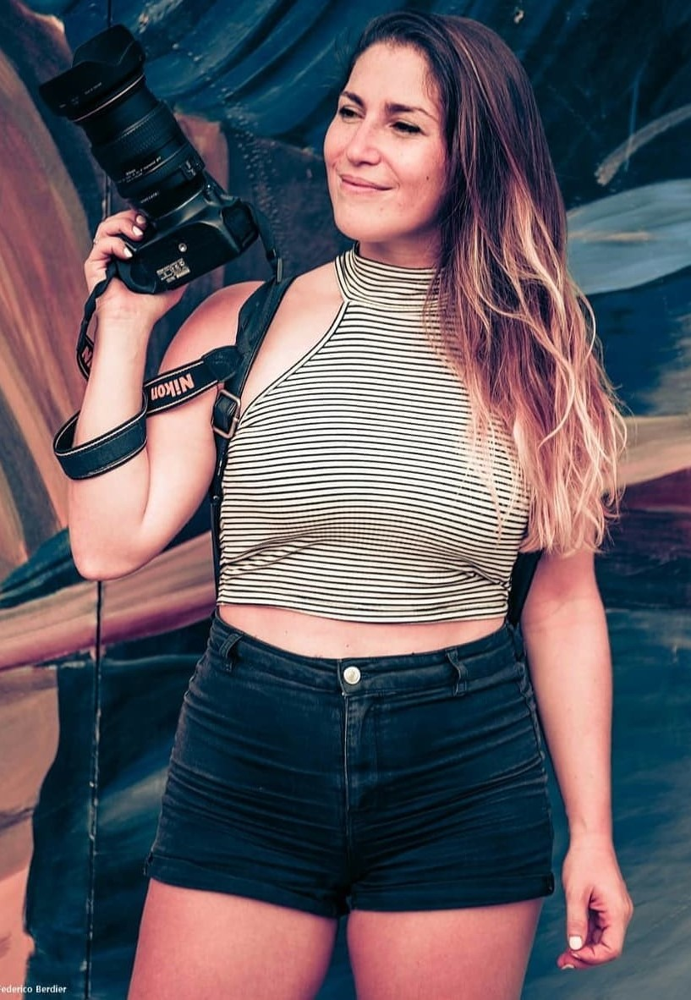

La fotografía como medio de expresión. Como forma de mostrarte el mundo. Como espejo que refleja lo que veo. Como caja de recuerdos. Como ideas plasmadas en imágenes. Como sueños hechos realidad. Como realidad llena de sueños. Como arte. Como lo que soy. ¿Porqué elijo la fotografía? Porque muestra la mejor versión de mi.
